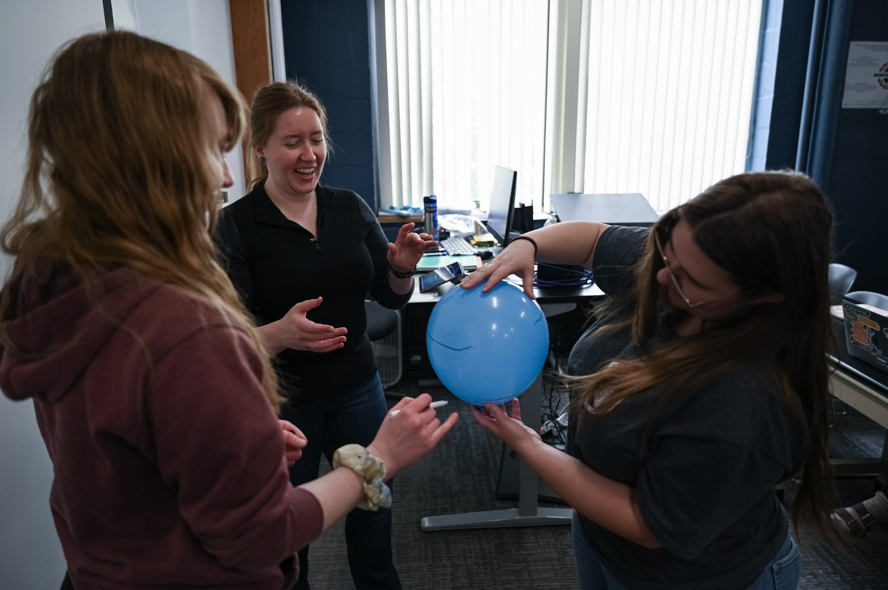
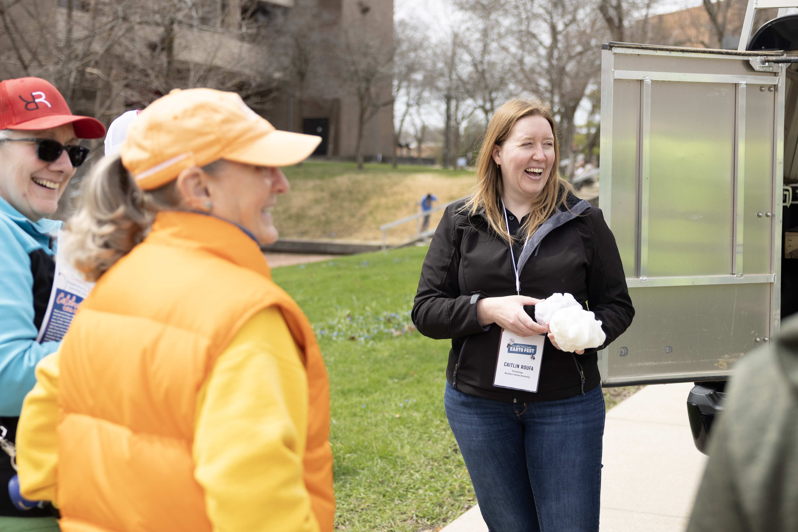

Teaching Experience
I have taught at the secondary, undergraduate, and graduate levels, from introductory Earth and space sciences to mathematically intensive atmospheric dynamics. I've designed and revised curricula, taught lecture and laboratory courses, engaged in community outreach, and mentored thousands of students both inside and outside the classroom.
Northern Illinois University
Instructor of Record
- Weather Dynamics I (MET 410/510)
- Weather Dynamics II (MET 411/511)
- Planetary and Space Sciences (EAE 103)
Graduate Teaching Assistant
- Weather Dynamics I and II laboratories
- Synoptic Meteorology laboratory
- Environmental Geography laboratory
Secondary Education
Illinois licensed educator — Harlem School District
- AP Physics, Honors Physics, and STEAM Physics
- Physical Science (Physics and Chemistry)
- Earth and Space Sciences
- Astronomy, Weather and Climate, and Oceanography
At the secondary level, I developed courses and hands-on curriculum that invited students to investigate the physical world, connect science to their daily lives, and consider careers in science.
For appointments, years, and additional details, see my Curriculum Vitae.
Teaching Philosophy
When I was an undergraduate, I received a competitive vocal scholarship for which there was a requirement to enroll in voice lessons. In my small group, there was an older gentleman who admitted he was taking classes so that he would no longer embarrass his wife in church. His wife's assessment of his singing was, unfortunately, accurate. I recall thinking at the time that people were either inherently good at something or not. Well, by the end of the term, this man was confidently belting out showtunes in a beautiful tenor! That moment permanently shaped my approach to learning and my philosophy as an educator, that anyone can learn anything if given time to practice and a patient, skillful teacher.
Atmospheric dynamics and physics can be intimidating. Many students view a course like Weather Dynamics with anxiety due to its mathematical rigor and reputation. In my role as Instructor of Record for MET 410/510 and 411/511, I redesigned the course sequence to incorporate hands-on demonstrations, Python-based labs, and applications with traditional hand computation and derivation of the governing equations. By explicitly connecting mathematical expressions to physical terms and observable phenomena, students build critical thinking and confidence in the content and in themselves.
I believe that one of the most important things we can do as educators is normalize failure. The academic environment ought to be a safe place for students to make mistakes, learn from those mistakes, and try again when the stakes are low. I use frequent formative assessments, structured problem solving in small groups, and opportunities to work through difficult concepts before rigorous exams. I'm not interested in making hard subjects easy by removing the hard parts. I want students to have the tools, support, and practice they need to work through them.
My classes balance lecture, small group discussion, demonstrations, and hands-on activities. I like to start with a question or a real phenomenon and work toward the physical principles and mathematics that explain it. Modern Earth science is incredibly data rich, and students need opportunities to work with real observations and models. In Weather Dynamics, that means using Python and atmospheric datasets alongside derivations, hand calculations, and interpretation of weather maps. Every assignment should bring us back to what the mathematics means physically, and why we care.
Teaching is also inseparable from mentoring for me. As a first generation, nontraditional student who returned to graduate school after teaching high school physics, I know that not all paths through education are the same. I want students to feel safe asking questions, whether in front of the class or quietly during office hours. Sometimes all a student needs in order to succeed is someone who takes an interest, believes they can do it, and helps them find the next step.
Ultimately, my goal is to help students experience their own version of that vocal class, the point where something that was once intimidating becomes something that they can do with confidence and perhaps even enjoy. Whether teaching introductory Earth science or upper level dynamics, I want students to leave with enthusiasm for understanding the world around them.

Teaching in Practice
My Weather Dynamics sequence is a good example of how I have put these ideas to work. I redesigned the lectures and labs to help students build physical intuition and quantitative skills together, while maintaining the rigor of a core meteorology course.
Connecting mathematics to physical meaning
We work from foundational principles toward applications, stopping along the way to talk about what each term represents. I use physical demonstrations, diagrams, unit and scale analysis, and real atmospheric examples to connect the equations to things students can understand and observe.
Learning by doing
Students work through short problems together, investigate weather maps, and use Python to analyze atmospheric datasets. In a quasigeostrophic dynamics activity, for example, students examine vorticity and vertical motion fields, work through the relevant equations, and discuss the weather patterns they expect to see.
Rigor, practice, and feedback
Frequent low stakes work and review sessions help students identify areas of confusion before exams. My assessments ask them not only to carry out calculations but to explain the physics. I use a mix of mathematical derivations, applications, and conceptual questions, and I've incorporated oral assessments that give students an opportunity to explain their thinking.
Mentoring beyond the classroom
I also enjoy helping students, including younger graduate studnets, develop as independent scientists... whether that means learning Python, working on their first figure, building confidence with the command line, preparing a poster, or connecting with a research opportunity. Teaching doesn't stop at the classroom door.
Student Feedback
The comments below are anonymous excerpts from official NIU end of course evaluations. Ellipses indicate omitted text.
“This class used to have a horrible reputation, and I was originally dreading it, but I have enjoyed every second of this course.”
Student evaluation · Weather Dynamics I, Fall 2025
“I consistently enjoy and look forward to attending class as Cait makes class extremely engaging and a pleasure to be in.”
Student evaluation · Weather Dynamics I, Fall 2025
“Always was available for help and clarification on topics if I did not understand… She put the hardest concepts in meteorology into very friendly terms.”
Student evaluation · Weather Dynamics I, Fall 2025
“Cait is an instructor of the highest level. She has an incredible depth of knowledge in both the applied and theoretical sections of dynamics, and does a phenomenal job linking dynamics concepts to real–world applications. The labs are well–designed and useful for gaining skills, her lectures are engaging and informative, and her exams are academically rigorous but reasonable. She's always willing to provide extra help outside of class, and I always feel safe asking questions publicly and privately.”
Student evaluation · Weather Dynamics I, Fall 2025
“This course was very challenging especially this semester as Cait had even higher expectations for us as students. Those higher expectations helped me in doing my best in class. … Our class together felt like a family and we all tried our best!”
Student evaluation · Weather Dynamics II, Spring 2026

Education and Outreach Projects

Atmospheric Dynamics Python Labs
Teaching resourceInteractive labs for teaching the application of atmospheric dynamics concepts in Python.

STEAM Careers Curriculum
Curriculum & outreachCurriculum bridging high school physics with STEM careers and role models.

Northern Illinois Weather & Climate
Community climate resourceRegional climate and severe storm analyses, accessible explanations, and practical resources developed for the DeCarbon DeKalb community event.